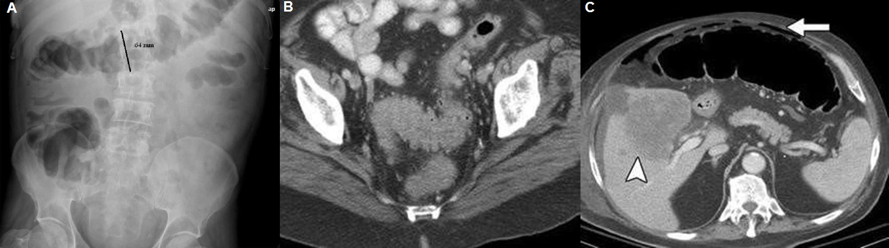
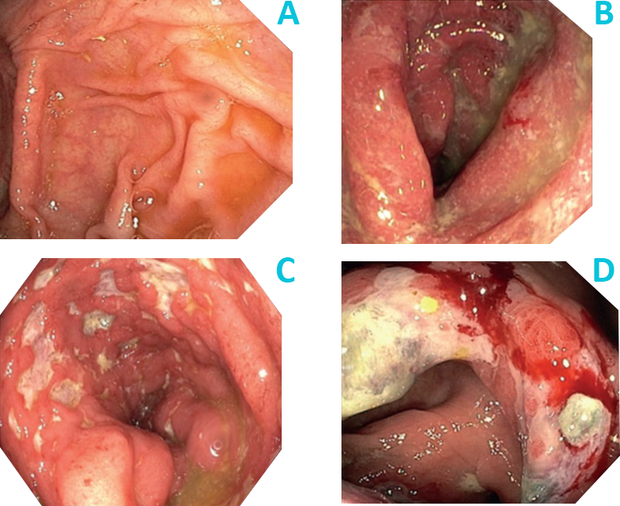

ICO 24h
MÓDULO 5 : Urgencias relacionadas con la inmunoterapia oncológica
5.2 Colitis inmunomediada
5.2.1 Definición y sospecha clínica
Uno de los efectos secundarios inmunorelacionados más comunes y potencialmente severo es la colitis. Presenta una incidencia del 35% con anti-CTLA-4, 20% con anti-PD-1 y hasta 44% con la terapia combinada. La mediana de tiempo hasta el inicio es de 7-8 semanas después de comenzar con ipilimumab (o combinaciones con ipilimumab), en comparación con 3-6 meses para los anticuerpos anti-PD1.
Presentación clínico-patológica :
- Síntomas más frecuentes
- Hallazgos radiológicos
| Síntomas más frecuentes | Diarrea acuosa (66-90%), dolor abdominal (50%), hematoquecia (30%) |
| Síntomas menos frecuentes | fiebre, náuseas y vómitos, pérdida de peso, deshidratación |
| Complicaciones agudas | Megacolon tóxico, perforación, muerte |

- Hallazgos endoscópicos
